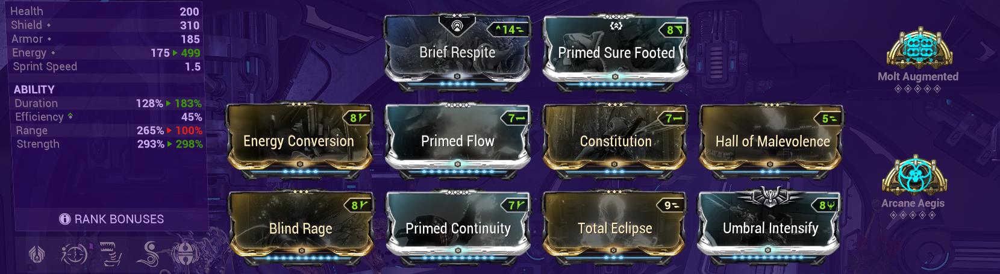
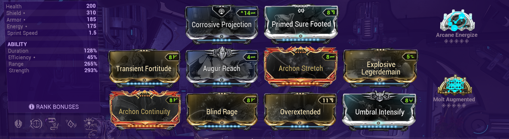
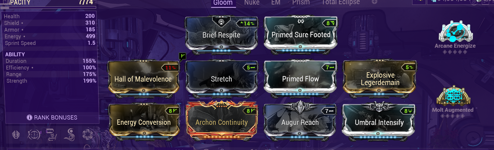

Mirage Builds
Build 1: Build focada em utilização de armas e utilidade

- Helminth é opcional, eu uso a do Styanax, mas basicamente você pode usar qual skill preferir aqui.
- Os arcanes também são mais preferência, mas eu recomendo fortemente o Aegis para ajudar na sobrevivência.
- Energia não é um problema nessa build, mas se quiser pode usar Energize.
- O mod NarrowMinded também pode ser utilizado, mas ele vai afetar no range do TotalEclipse(Que também é opcional na build).
Build 2: Build Nuke, focada na segunda habilidade

- O Augment é essencial para que essa build funcione.
- Mods Archon não são necessários e fazem praticamente 0 diferença na build, só coloquei porque sobrou espaço.
- Só uso Continuity por causa da skill do helminth.
- Se não tiver energize usar a skill do Grendel pode ser uma boa opção.
- Se tiver problemas de energia pode tirar o BlindRage da build se assim preferir, dependendo do nível dos inimigos que for utilizar essa build a força vai fazer pouca diferença.
Build 3: Build para controle de grupo usando Gloom

- O Augment da skill 2 é essencial para que essa build funcione.
- A sinergia da build gira em torno do slow do Gloom e o controle de grupo que a skill 2 causa. Os inimigos vão tomar o CC da skill 2 e o Gloom vai atrasar a animação de recuperação deles com o Slow.
- O Augment da skill 1 é opcional, você pode usar streamline, duração ou mais força no lugar se preferir.